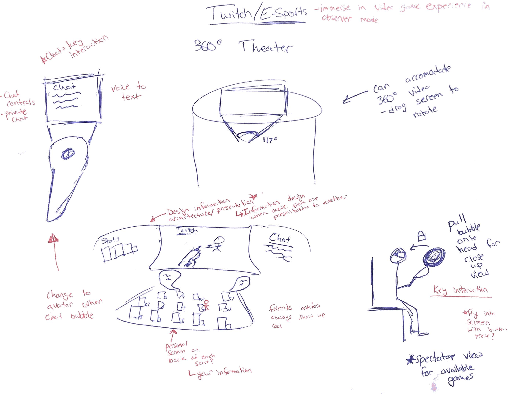
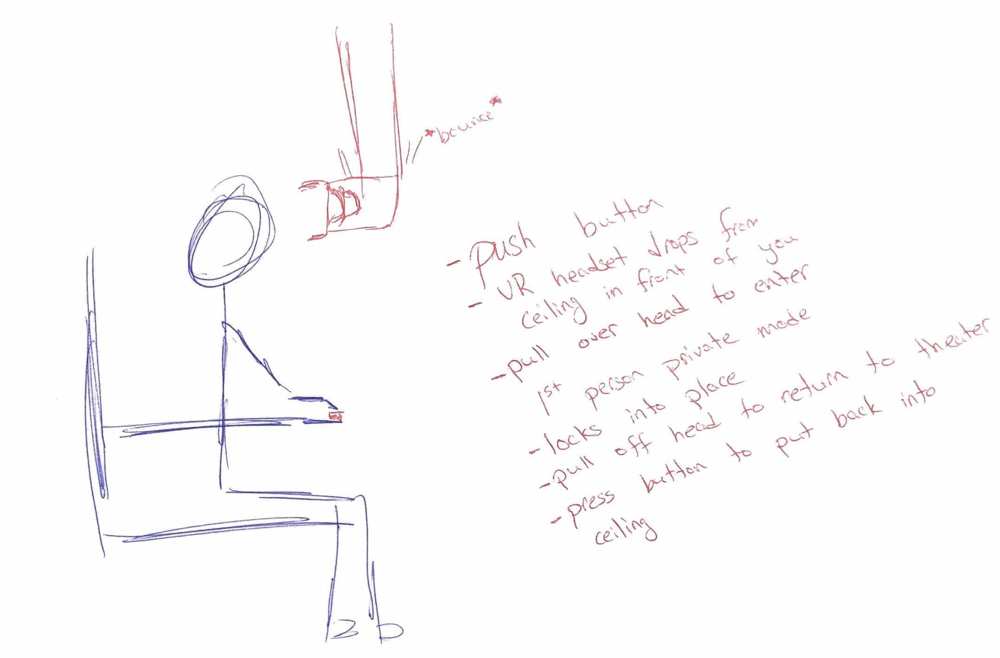
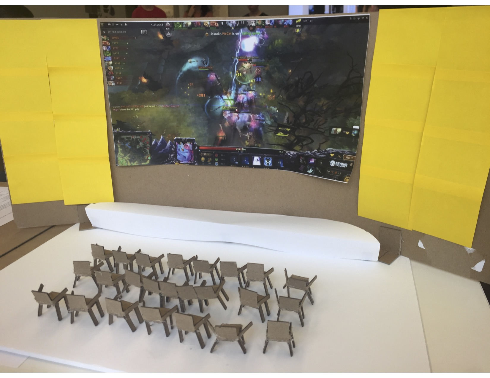
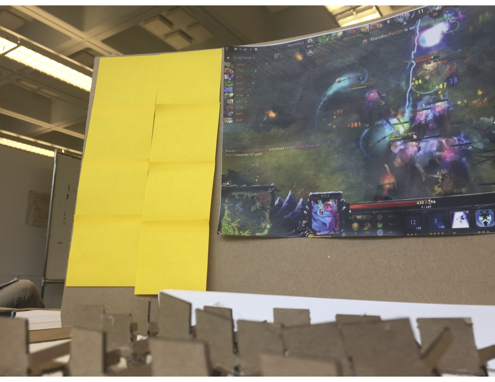
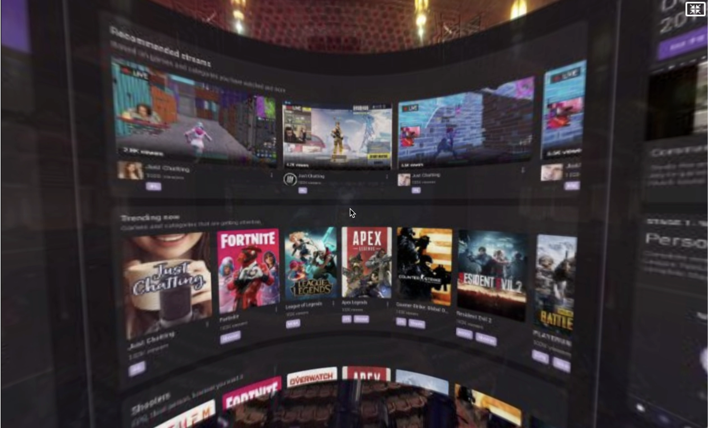
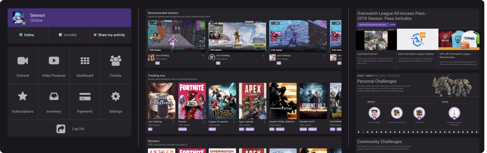
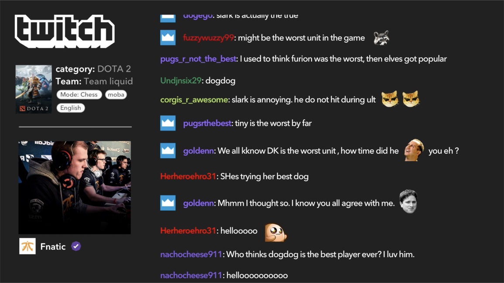
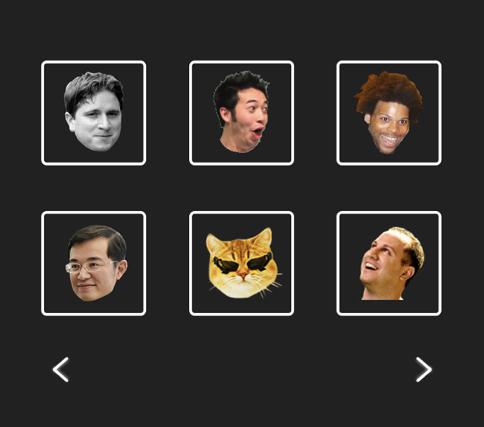
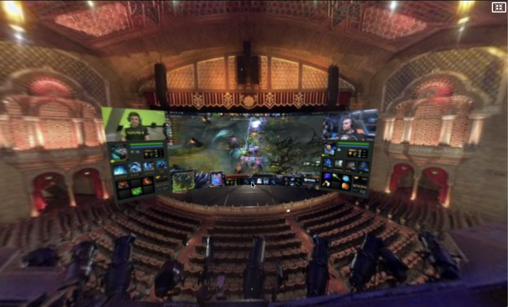
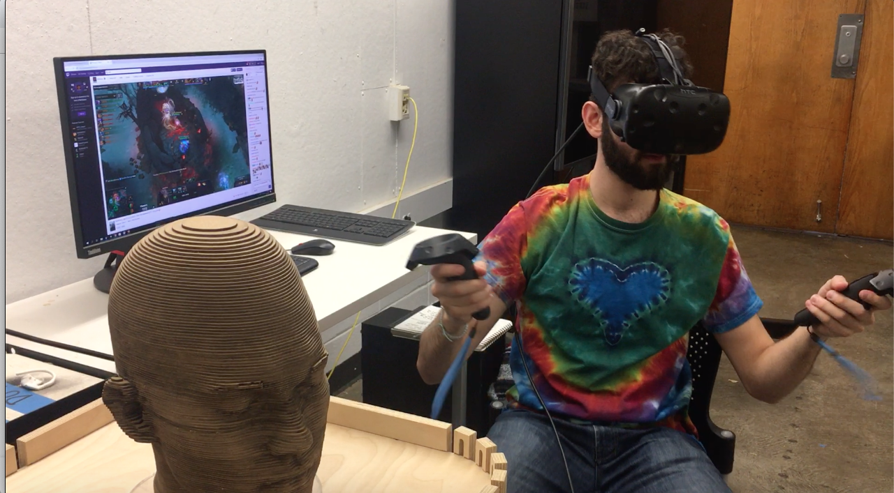

Story
Although this project was short, a lot of effort went into following proper design process and executing many important steps on the journey to our demo. First, we began with brainstorming any and all forms of social media that might be valid targets for our project prompt. Once we settled on video streaming, we had to narrow our scope first down to Twitch and then even further to a large theater like setup.
 Some initial sketches I created during brainstorming and conceptualization
We created a storyboard showing off one of the key features of the experience: switching from theater view to private viewing, by summoning a VR headset while in the experience itself and using that to ‘zoom in’ to the action.

Storyboard showcasing the interaction to enter private viewing mode
Once we had a general idea of what our concept was, we needed to envision what our virtual space would look like, so we created a physical prototype of the VR theater using a laser cutter and papercraft to fabricate the various elements. This physical model helped us to determine scale and other features that would be necessary to consider in the virtual space.
 Two shots of the paper prototype we created to help scale the idea. The second image highlights the benefits of this type of mockup when designing for VR
After that we imagined what it would take to present our concept in an easily conveyable fashion. I suggested using my skills in Unity Game Engine to make an actual working demo that you could experience with a VR headset while the other group members created various UI screens and assets I could import into the virtual space.
 The curved Channel Changer UI screen in an interactive 360 image and a higher res flat version
The scrolling seatback chatscreen UI

The emote selection UI and a sample emote speech bubble that would appear in the crowd
In addition, one of the other team members created a few 360 images that superimposed our VR viewing screen into real theater spaces to help showcase the concept of customizable environments.
A 360 image of TwitchVR in Atlanta's own Fox Theater
The night before the presentation I was putting the final touches on the theater space and went to test the experience with the actual HTC Vive VR headset, however there were some major issues transferring the Unity file from my computer to the one with the Vive, which ultimately led to me having to recreate the entire theater and interactions from scratch over the course of the final 10 hours.
Me performing some final testing of the demo before building and exporting the final project
In the end, though I was tired, it was exciting to see the imagined virtual space become a reality with the demo prototype fully functioning when it was presented to the studio. The professor certainly enjoyed seeing a working VR experience…and also the fact that we had featured his face as one of the available Twitch emotes.